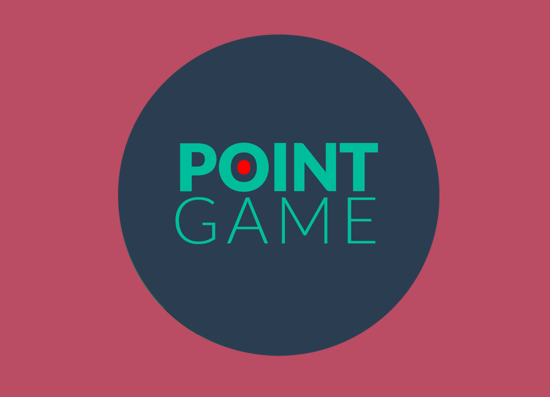

    
    <div class="portfolio-modal modal fade" id="portfolioModal2" tabindex="-1" role="dialog" aria-hidden="true">
        <div class="modal-content">
            <div class="close-modal" data-dismiss="modal">
                <div class="lr">
                    <div class="rl">
                    </div>
                </div>
            </div>    
            <div class="container">
                <div class="row">
                    <div class="col-lg-8 col-lg-offset-2">
                        <div class="modal-body">
                            <h2>Point Game</h2>
                            <hr class="star-primary">
                            
                          <p>The concept of Point Game is to help you become more efficient in you’re daily life by structuring you’re planning. Point game is a todo-list that wants to help you take on the hard and time-consuming tasks of you’re daily life so you can get more free time without stress. You collect points for each todo-list where every item in the list is worth a number of points witch you have given them by choosing witch one is the hardest or most important. It a competition against yourself to collect as many points as you can, you get the points when an item in the list is done. </p>
                            <button href="templates/index.html" type="button" class="btn btn-default" data-dismiss="modal"><i class="fa fa-times"></i> Close</button>
                        </div>
                    </div>
                </div>
            </div>
        </div>     
   </div>